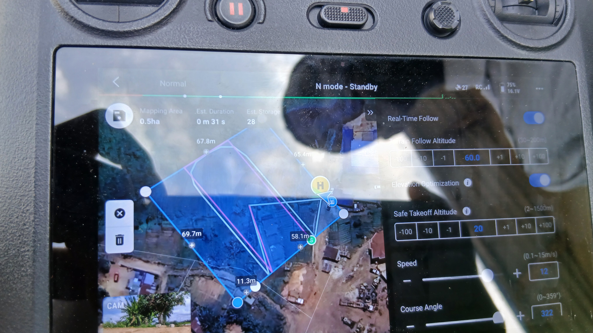

Un service pensé avec les agriculteurs, pour les agriculteurs.
Du survol drone jusqu’au conseil au champ, AgriVision rend l’information agricole claire, localisée et écoutable en Français et en Fɔ̀ngbè — sans jargon.

Notre service
AgriVision survole votre parcelle et transforme les photos en cartes simples. Chaque couleur indique une vigueur différente : vous savez où regarder en priorité, où toucher la terre et où observer les feuilles avant d’agir.
Résultat : vous économisez l’eau, l’engrais et les traitements, tout en protégeant la récolte. Les explications sont disponibles à l’oral, en Français et en Fɔ̀ngbè avec voix humaine.
Comment ça marche ?
Le vol
Drone DJI M3E, 60 m d’altitude, photos couvrant 2,17 ha.
L’assemblage
Photos assemblées en orthophoto précise (1,8 cm/pixel).
L’analyse
Vigueur mesurée zone par zone (VARI), 3 classes.
Le conseil
Recommandations claires, localisées et écoutables.
Ce que cela vous apporte
🌍 Vision globale
Parcourez 2,17 ha d’un seul regard, même les zones difficiles d’accès.
🚨 Détection précoce
Repérez les zones faibles avant qu’elles ne se voient à l’œil nu.
📍 Conseils localisés
Sachez où contrôler l’humidité et la couleur des feuilles.
📈 Suivi dans le temps
Comparez les vols pour suivre l’évolution.
🗣️ Bilinguisme
Écoutez en Français ou en Fɔ̀ngbè avec voix humaine.
🌱 Durabilité
Interventions ciblées après vérification terrain.
Nos engagements
Résultats expliqués sans jargon, accessibles à tous.
Aucun apport sans contrôle du sol et des feuilles.
Outils ouverts (WebODM/QGIS), méthode expliquée.
Du vol jusqu’au conseil, avec vous au champ.
Contactez-nous
En Fɔ̀ngbè, appuyez sur Audio : Fɔ̀ngbè en haut puis sur 🔊 Écouter le contact — le bouton sera ajouté automatiquement.